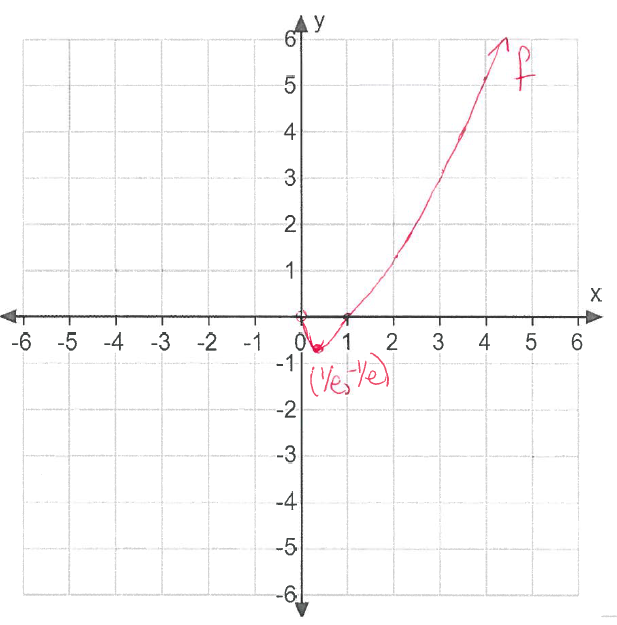

Domain
\(x,y\)-intercepts
Symmetry
Intervals of increasing/decreasing
Maxima/Minima (including absolute)
Intervals of concavity
Inflection points
Given \(\lim _{x \to 0^+}f(x)=0\), sketch a graph \(f\).
- (a)
- Domain: \((0,\infty )\)
- (b)
- \(x,y\)-intercepts:
x-interpects occur when \(f(x) = x\ln (x) =0\). We would think this occurs when either \(x=0\) or \(ln(x)=0\). However, \(x=0\) is not in the domain. We only have \(ln(x)=0\) which is at \(x=1\). y-intercepts: None given the domain. - (c)
- Symmetry: Given the domain of the function, it does not make sense to check for even/odd.
- (d)
- Intervals of increasing/decreasing:
\[f'(x)=\ln (x)+1\]Find: \(f'(x)=\ln (x)+1=0 \implies \ln (x)=-1 \implies x=e^{-1}\)
Since \(f'\) possibly changes its sign at critical points only, the sign of \(f'\) is constant on intervals \((0,e^{-1})\) and \((e^{-1},\infty )\). Since \(f'(1)=1>0\), and \(f'(e^{-3})=-3+1=-2<0\), it follows that \(f'\) is negative on \((0,e^{-1})\) and positive on \((e^{-1},\infty )\).
Therefore, \(f\) is decreasing on \((0,e^{-1})\) and \(f\) is increasing on \((e^{-1},\infty )\).
- (e)
- Maxima/Minima
Since the function is decreasing on \((0,e^{-1})\) and \(f\) is increasing on \((e^{-1},\infty )\)., the absolute minimum value of \(f\) is attained at \(x=e^{-1}\). The absolute minimum value of \(f(x)=f(e^{-1})=e^{-1}\ln e^{-1}=-e^{-1}=-\frac {1}{e}\)
The absolute maximum value of \(f\) does not exist, since the only critical point is a minimum and \(\lim _{x \to \infty }f(x)=+\infty \)
- (f)
- Intervals of concavity and inflection points: \(f'(x)=\ln (x)+1 \implies f''(x)=\frac {1}{x}>0\) on the domain of \(f\). Concave up on its domain and there are no inflection points.
- (g)
- Given \(\lim _{x \to 0^+}f(x)=0\), sketch a graph \(f\):
